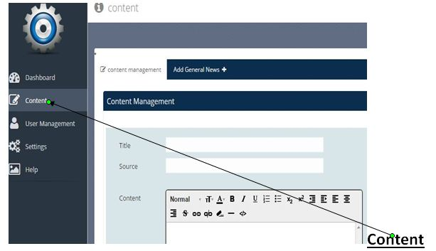
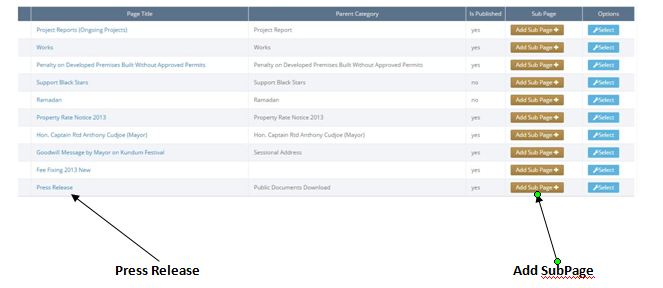

Adding Press Release
Adding Press Release
1. Press Release are documents placed on the website for the general public to download.

2. To add a Press Release, Click on the Content.

3. Search for Press Release in the table below
and click on its corresponding "Add sub Page" Button.

4. Fill the forms given you.
-Title = the title of the Press Release you are creating.
-Source = Is the source of Information you are adding to the Press Release.
-Show Page = if yes, means the Press Release you are creating will be shown on the website after saving
else the Press Release will be created after saving but will not show on the website.
-Parent Category = tells you the page under which you are creating the Press Release.
-Resource = Used to add image to the press release document. eg: word file

3. Click on the "save new content" button below, when done.
4.The 'rest form' button when clicked will clear all details populated in the form.
Created with the Personal Edition of HelpNDoc: Free HTML Help documentation generator